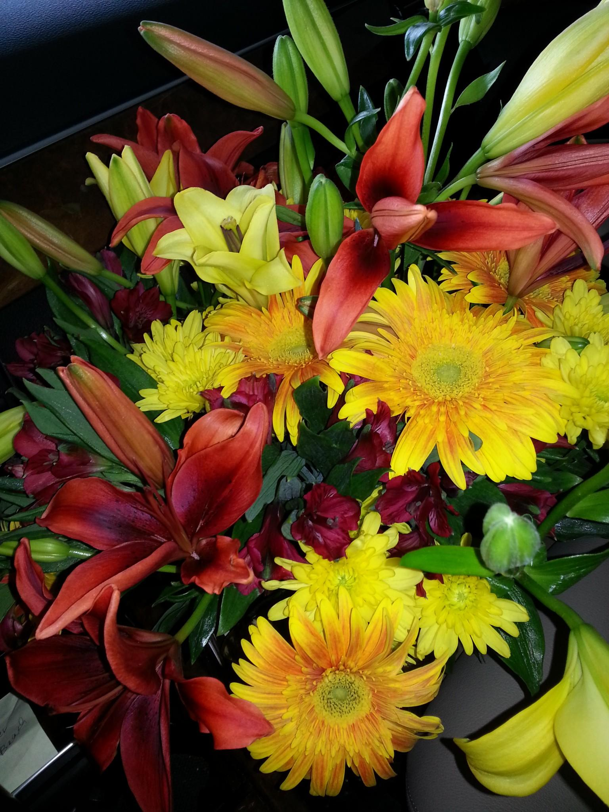
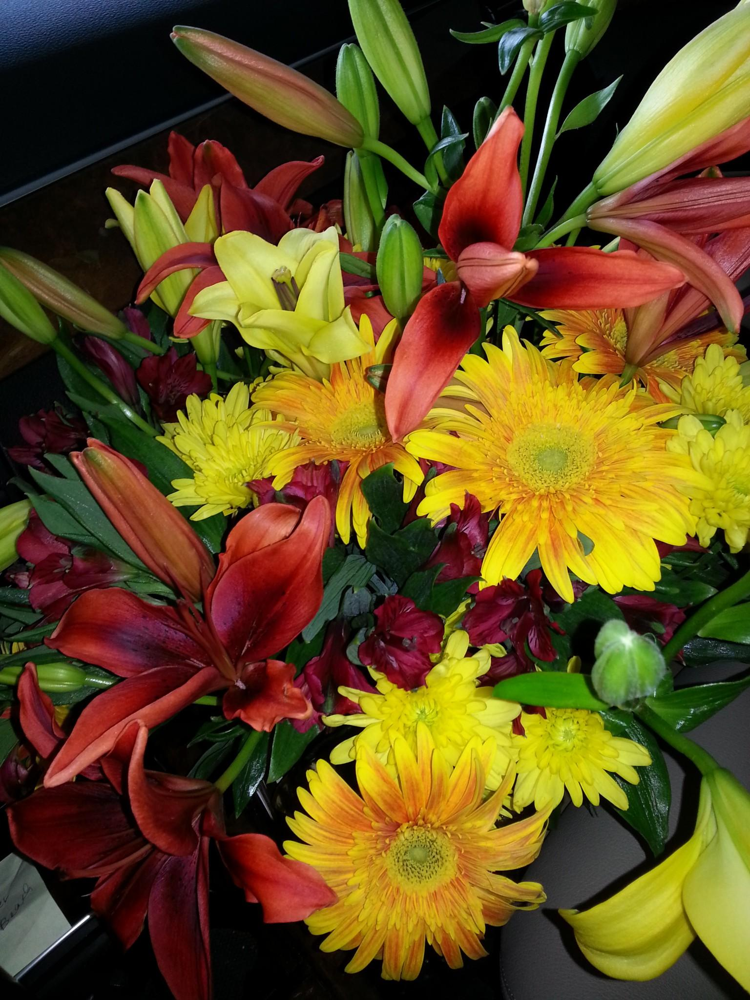

This project was a website design for a florist. It includes header links, links throughout the page as well as images and information about the costs of bouquets available at the business. It also includes information about the business location. In creating this site, I utilized HTML and CSS. Before starting the project, once I came to the idea that I'd like to make a site for this business, I did research on other florist websites in various locales. Once I gathered some inspiration from those sites, I came up with a page schematic detailing what and where various elements would go. Next, I focused on creating the content of the page and gathered necessary images and data on prices and names of products and input that all for the HTML elements of the page. Once I worked through the HTML aspects and decided on how I'd utilize HTML skills for the layout, I tackled the CSS elements. I tinkered with the various elements, sizes, colors, and effects until I found ones that all worked together. Once I had completed the work on the project, I showed the finished product to the client and ensured that they were happy with the outcome.


This project was a website design for a taco shop. It includes header links, as well as images and information about the food available and the business setup. It also includes information about the business location. In creating this site, I utilized HTML and CSS. First, I focused on creating the content of the page and gathered necessary images and data on products and input that all for the HTML elements of the page. Once I worked through the HTML aspects and decided on how I'd utilize HTML skills for the layout, I tackled the CSS elements. I tinkered with the various elements, sizes, colors, and effects until I found ones that all worked together.

This project was a portfolio item describing my favorite project at my company. It includes a header section with an image of the company logo and heading tag with words "Favorite Project at Spotify." Then, in the body section, I've used another heading tag with words "Website Overhaul." Finally, I have a paragraph section detailing what the website overhaul was. There is also some CSS in the header making the background a different color and positioning the aspects within the header in such a way to make it more readable and visually pleasing.